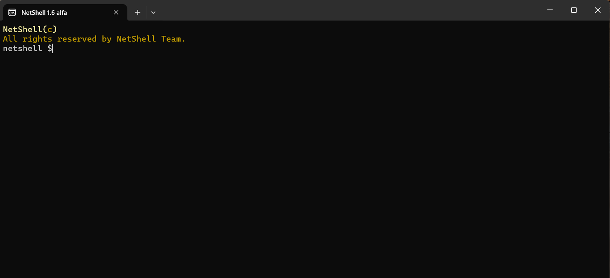
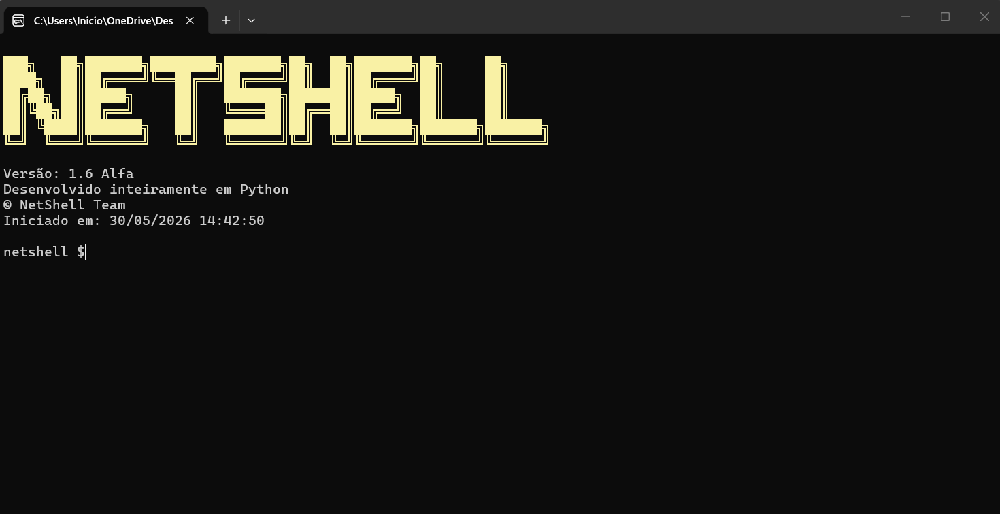
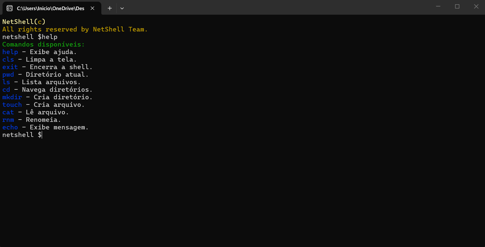

Um Shell desenvolvido completamente em Python



NetShell é um shell desenvolvido inteiramente em Python, criado com o objetivo de fornecer uma experiência simples e rápida para execução de comandos.
O projeto possui seu próprio shell, e depende de um terminal. Inspirado nos terminais bash, O NetShell continua em desenvolvimento e recebe melhorias constantes a cada versão.
✔ Desenvolvido 100% em Python
✔ Código aberto (Open Source)
✔ Leve e rápido
✔ Fácil de usar, junto com o comando "help"
✔ Projeto em constante evolução